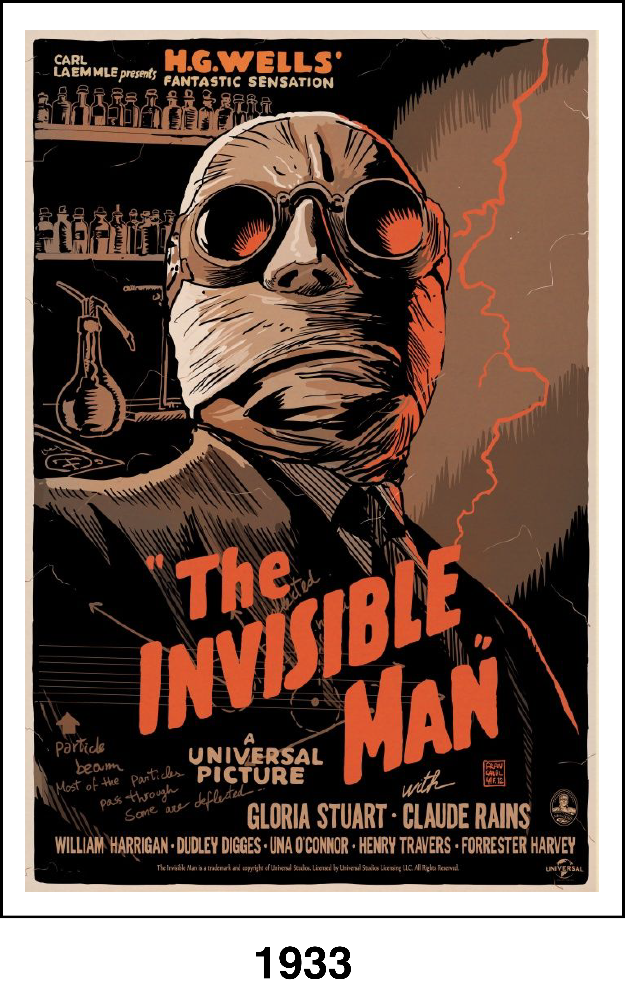
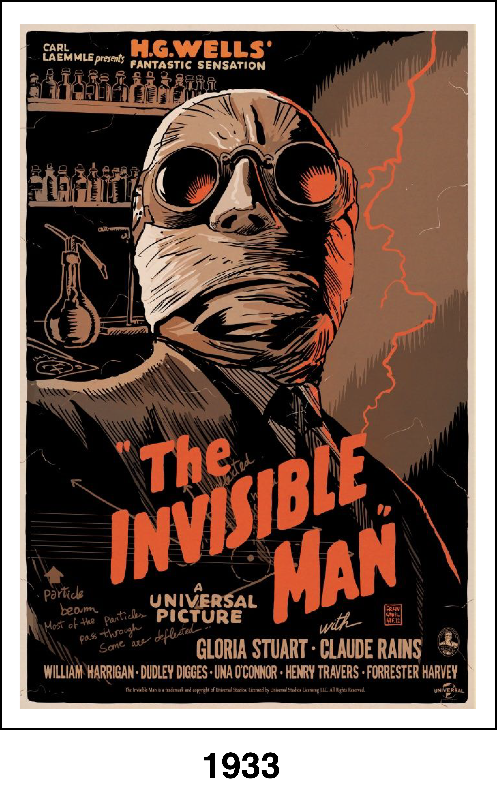

While researching a new drug, Dr. Jack Griffin (Claude Rains) stumbles on a potion that can make him invisible. When he reveals his new ability to his old mentor (Henry Travers) and his fiancée (Gloria Stuart), it's clear that a side effect of the potion is insanity. Jack goes on a violent rampage, and the police struggle to hunt him down, unable to see their target, while his mentor and his former partner (William Harrigan) desperately try to devise a plan to capture him.